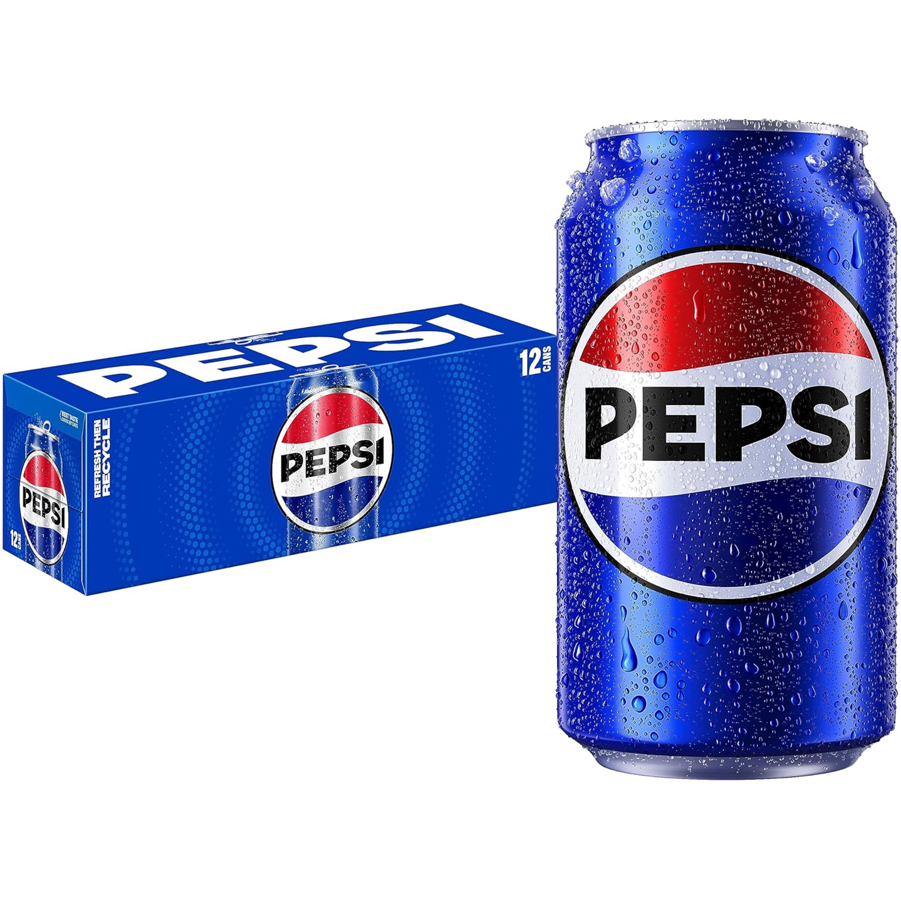

Bulk pull early, work front to back, finish near receiving.
Manager note
Core hit only for new merchandisers
Prioritize checkout coolers, lobby/ad displays, the deli chicken rack, and verified B|4 soda sections. Use the map as the base route; add rep-sold displays when the route owner confirms them.
Rep-added
Sold Displays
Displays the route owner sold into this store. Fill-ins should check these even when they are not on the standard aisle map.
Scan or search
Find where it goes
Scan a barcode or type a product, UPC, or Meijer item ID. The app only returns Store #57 locations that are mapped for this merch route.
Manual lookup ready.

Store map & route
Tap a stop to focus the route. This is a grocery-side working map, not a Meijer blueprint.
Soda
How to work this store
- Start front: fill checkout coolers and queue singles before any aisle work.
- Clear front displays: lobby, seasonal, and ad stacks while you are already up front.
- Check deli: find rotisserie chicken and service the mini-can chicken-rack display if present.
- Work B|4 by section: sections 2 and 4 first, then 6, 8, 12, and 14.
- Do heavy pack work first: 24 packs/cubes, 12 packs, mini cans, 2 liters, then small formats.
- Finish back: overstock, credits, cardboard, and route-owner notes near receiving.
Stop 1 of 6
Front register coolers
Highest-profit singles first. Check all register doors before moving deeper into the store.